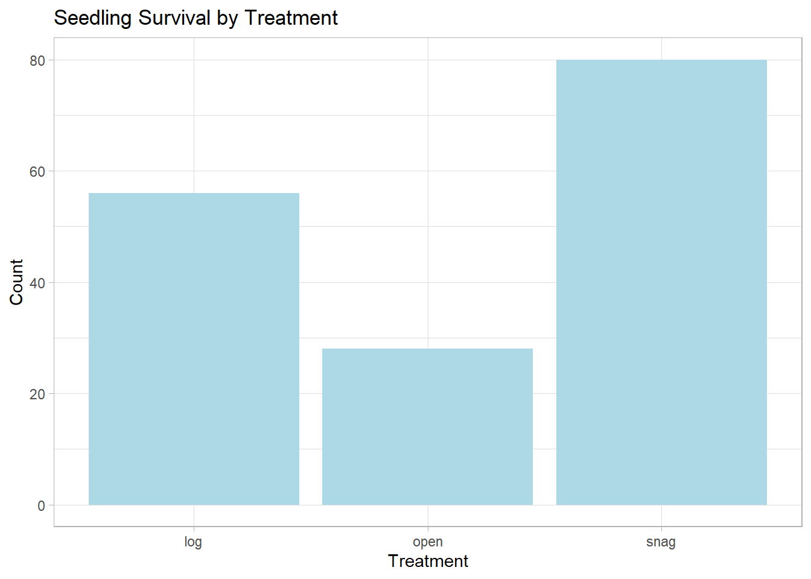
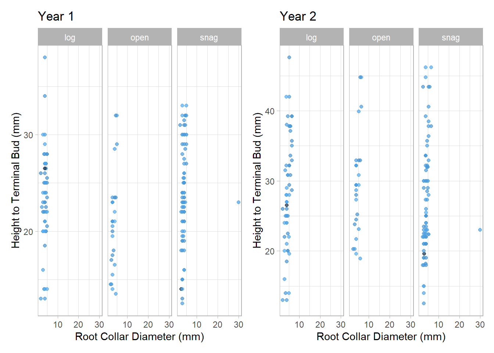

Chapter 4 Simulating data and using ggplot
In this chapter, I will show how I used simulated data to visualize some “fake” findings.
4.1 Simulating the data
First I simulated data to run. Below is very simple code I used to create some data. I first manipulated the data using a binomial distribution. This randomly selected some seedlings to survive and some to die. Of those that survived, I increased the height by 40% and the RCD by 30%. Then I manually added more weight to the snag treatment.
# load packages
library(tidyverse)
library(lme4)
horton_man <- read.csv("horton_man.csv") %>%
filter(is.na(site_no)== FALSE)
# this is remnant code on how I did that:
# horton_man <- horton %>%
# mutate(measurement_id = case_when(tag_id != "NA" ~ paste0(tag_id,"-02")),
# status = rbinom(n=350,prob = .75, size = 1),
# height = case_when(status==1 ~ height*1.4, # increase height by 40%
# status==0 ~ height),
# rcd = case_when(status == 1 ~ rcd*1.3, # increase rcd by 30%
# status == 0 ~ rcd)) %>%
# filter(is.na(site_no) == FALSE)4.2 Plotting the data using ggplot
4.2.1 Plot 1
Below is the code I used to generate a bar plot displaying how many seedlings survived in each treatment group. This is a simple plot but it does display what treatment yielded the most seedling survival.
library(ggplot2)
library(viridis)
horton_man %>%
as_tibble() %>%
filter(status == 1) %>%
ggplot(aes(x = structure, fill = status)) +
geom_bar(fill = "light blue") +
labs (x = "Treatment", y = "Count",
title = "Seedling Survival by Treatment") +
theme_light()  ### Plot 2
Below is code I used to plot the root collar diameter and height of each seedling in the Horton fire. I wanted to compare growth of those that survive from the time of planting to the second year.
library(viridis)
library(patchwork)
p1 <- horton_man %>%
as_tibble() %>%
filter(status == 1) %>%
ggplot(aes(x = rcd, y = height, color = tag_id)) +
geom_point(alpha = 0.7)+
facet_wrap(~structure) +
labs(x = "Root Collar Diameter (mm)",
y = "Height to Terminal Bud (mm)",
title = "Year 1") +
theme_light() +
theme(legend.position = "none") +
scale_fill_viridis(option = "magma")
p2 <- horton_man %>%
as_tibble() %>%
filter(status == 1) %>%
ggplot(aes(x = rcd_2, y = height_2, color = tag_id)) +
geom_point(alpha = 0.7)+
facet_wrap(~structure) +
labs(x = "Root Collar Diameter (mm)",
y = "Height to Terminal Bud (mm)",
title = "Year 2") +
theme_light() +
theme(legend.position = "none") +
scale_fill_viridis(option = "magma")
p1 | p2